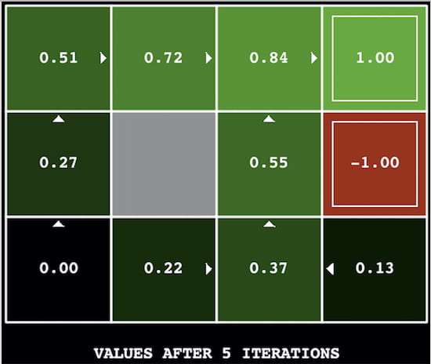
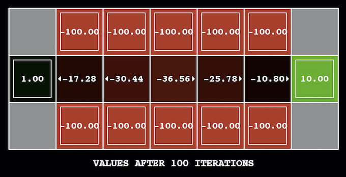
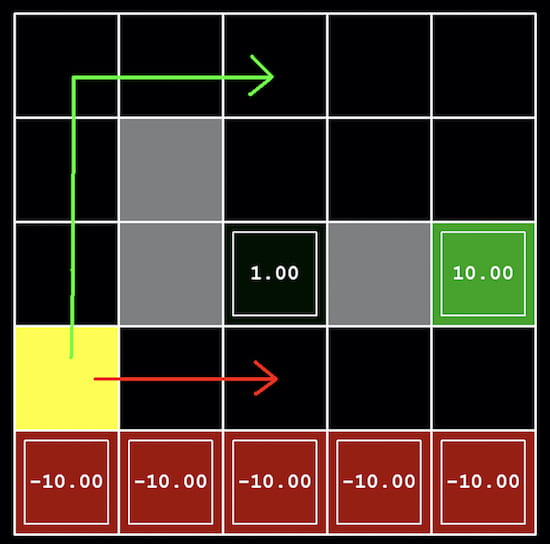
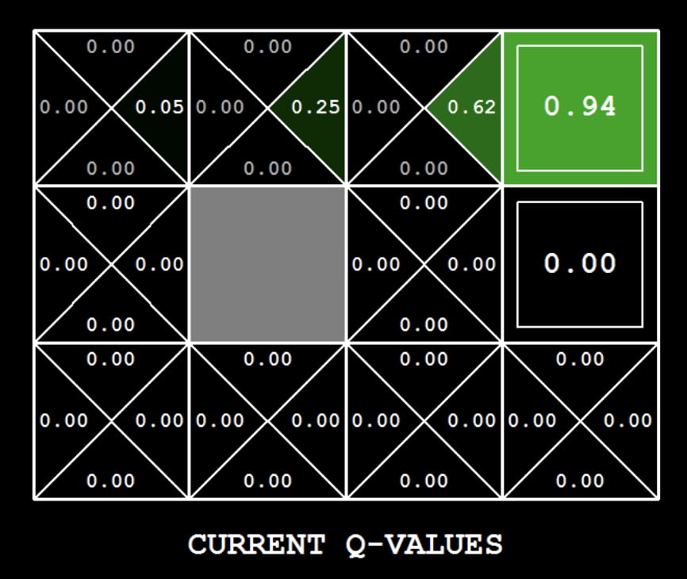

Assignment 2: Value Iteration and Q-Learning
Assignment Details
Introduction
- In this project, you will implement value iteration and Q-learning. You will test your agents first on
GridWorld(from lecture), then apply them to a simulated robot controller (Crawler) and Pacman. - The code for this project contains the following files, which are available as a zip archive.
Files you'll edit (if you do not want to use Stata but python):
valueIterationAgents.py
A value iteration agent for solving known MDPs.qlearningAgents.pyQ-learning agents for GridWorld, Crawler and Pacman.analysis.pyA file to put your answers to questions given in the project.
Files you should read but NOT edit:
mdp.py
Defines methods on general MDPs.learningAgents.py
Defines the base classesValueEstimationAgentandQLearningAgent, which your agents will extend.util.py
Utilities, includingutil.Counter, which is particularly useful for Q-learners.gridworld.py
The GridWorld implementation.featureExtractors.pyClasses for extracting features on (state,action) pairs. Used for the approximate Q-learning agent (inqlearningAgents.py).
Files you can ignore
-
environment.py
Abstract class for general reinforcement learning environments. Used bygridworld.py. -
graphicsGridworldDisplay.py
GridWorld graphical display. -
graphicsUtils.py
Graphics utilities. -
textGridworldDisplay.py
Plug-in for the GridWorld text interface. -
crawler.py
The crawler code and test harness. You will run this but not edit it. -
graphicsCrawlerDisplay.py
GUI for the crawler robot. -
autograder.py
Project autograder. -
testParser.py
Parses autograder test and solution files. -
testClasses.py
General autograding test classes. -
test_cases/
Directory containing the test cases for each question. -
reinforcementTestClasses.py
Project 3 (this project) specific autograding test classes.
Files to Edit and Submit:
You will fill in portions of valueIterationAgents.py, qlearningAgents.py, and analysis.py during the assignment. You should submit these files with your code and comments.
Please do not change the other files in this distribution or submit any of our original files other than these files.
Commenting:
In this assignment we ask you to provide extensive commenting for the two files valueIterationAgents.py and qlearningAgents.py.
For each function that you implement, provide:
- (a) an overall comment as part of the multiline string immediately following the function header. This comment should describe what the function computes and roughly how it computes it.
- (b) a per-line comment describing briefly what each line of code is doing. These can be phrases at the end of each line, preceded by
#. If there isn’t enough space, you may also add separate comment lines.
A portion of the project grade (3 points out of 28) will be based on an inspection of your comments in these two files.
Getting Help
You are not alone! If you find yourself stuck on something, let us know. We want this project to be rewarding and instructional, not frustrating and demoralizing. But we won't know when or how to help unless you ask.
MDPs
To get started, run GridWorld in manual control mode, which uses the arrow keys:
python gridworld.py -m
You will see the two-exit layout from the lectures. The blue dot is the agent.
Note that when you press up, the agent only actually moves north 80% of the time.
Such is the life of a GridWorld agent!
You can control many aspects of the simulation. A full list of options is available by running:
python gridworld.py -h
The default agent moves randomly:
python gridworld.py -g MazeGrid
You should see the random agent bounce around the grid until it happens upon an exit.
Not the finest hour for an AI agent.
Note:
The GridWorld MDP is such that you first must enter a pre-terminal state (the double boxes shown in the GUI)
and then take the special exit action before the episode actually ends (in the true terminal state
called TERMINAL_STATE, which is not shown in the GUI).
If you run an episode manually, your total return may be less than you expected, due to the discount rate
(-d to change; 0.9 by default).
Look at the console output that accompanies the graphical output (or use -t for all text).
You will be told about each transition the agent experiences (to turn this off, use -q).
As in Pacman, positions are represented by (x, y) Cartesian coordinates,
and any arrays are indexed by [x][y], with 'north' being the direction of increasing y, etc.
By default, most transitions will receive a reward of zero,
though you can change this with the living reward option (-r).
Question 1 (6 points): Value Iteration
Recall the value iteration state update equation:
V_{k+1}(s) = \max_a \sum_{s'} T(s,a,s')[R(s,a,s') + γ V_k(s')]
Write a value iteration agent in ValueIterationAgent, partially specified in valueIterationAgents.py. This agent is an offline planner. The relevant training option is the number of iterations (-i) in its initial planning phase. The constructor runs value iteration for that many iterations before returning.
Implement these methods using V_k:
computeActionFromValues(state): best action according toself.values.computeQValueFromValues(state, action): Q-value of(state, action)pair fromself.values.
These appear in the GUI: values in squares, Q-values in quarters, policies as arrows.
Important: Use batch value iteration—each V_k from fixed V_{k-1}, not in-place updates. Successor values must come from iteration k-1 even if some have updated in k. See Sutton & Barto, Ch.4.1, 6th paragraph.
Note: A policy from depth k values reflects k+1 rewards (π_{k+1}). Q-values reflect one more reward too (Q_{k+1}).
Return the synthesized policy π_{k+1}.
Hint: Use util.Counter (a dict with default 0). Methods like totalCount help. Watch out: argMax may not include the actual max key.
Note: Handle states with no available actions (terminal states).
Run your agent and simulate 10 episodes:
python gridworld.py -a value -i 100 -k 10
Hint: On BookGrid, 5 iterations yields:
python gridworld.py -a value -i 5

Grading: Your agent will be graded on a new grid. We will check values, Q-values, and policies after fixed iterations and at convergence (e.g., after 100 iterations).
Question 2 (1 point): Bridge Crossing Analysis
BridgeGrid is a grid world map with a low-reward terminal state and a high-reward terminal state separated by a narrow “bridge,” on either side of which is a chasm of high negative reward. The agent starts near the low-reward state. With the default discount of 0.9 and the default noise of 0.2, the optimal policy does not cross the bridge. Change only one of the discount and noise parameters so that the optimal policy causes the agent to attempt to cross the bridge. Put your answer in question2() of analysis.py. (Noise refers to how often an agent ends up in an unintended successor state when they perform an action.) The default corresponds to:
python gridworld.py -a value -i 100 -g BridgeGrid --discount 0.9 --noise 0.2

Grading: We will check that you only changed one of the given parameters, and that with this change, a correct value iteration agent should cross the bridge.
Question 3 (5 points): Policies
Consider the DiscountGrid layout, shown below. This grid has two terminal states with positive payoff (in the middle row), a close exit with payoff +1 and a distant exit with payoff +10. The bottom row of the grid consists of terminal states with negative payoff (shown in red); each state in this “cliff” region has payoff −10. The starting state is the yellow square. We distinguish between two types of paths:
- Paths that “risk the cliff” and travel near the bottom row of the grid; these paths are shorter but risk earning a large negative payoff, and are represented by the red arrow in the figure below.
- Paths that “avoid the cliff” and travel along the top edge of the grid. These paths are longer but are less likely to incur huge negative payoffs. These paths are represented by the green arrow in the figure below.

In this question, you will choose settings of the discount, noise, and living reward parameters for this MDP to produce optimal policies of several different types. Your setting of the parameter values for each part should have the property that, if your agent followed its optimal policy without being subject to any noise, it would exhibit the given behavior. If a particular behavior is not achieved for any setting of the parameters, assert that the policy is impossible by returning the string NOT POSSIBLE.
Here are the optimal policy types you should attempt to produce:
a. Prefer the close exit (+1), risking the cliff (−10)
b. Prefer the close exit (+1), but avoiding the cliff (−10)
c. Prefer the distant exit (+10), risking the cliff (−10)
d. Prefer the distant exit (+10), avoiding the cliff (−10)
e. Avoid both exits and the cliff (so an episode should never terminate)
question3a() through question3e() should each return a 3-item tuple of (discount, noise, livingReward) in analysis.py.
Note: You can check your policies in the GUI. For example, using a correct answer to 3(a), the arrow in (0, 1) should point east, the arrow in (1, 1) should also point east, and the arrow in (2, 1) should point north.
Note: On some machines you may not see an arrow. In this case, press a button on the keyboard to switch to Q-value display, and mentally calculate the policy by taking the argmax of the available Q-values for each state.
Grading: We will check that the desired policy is returned in each case.
Question 4 (5 points): Q-Learning
Note that your value iteration agent does not actually learn from experience. Rather, it ponders its MDP model to arrive at a complete policy before ever interacting with a real environment. When it does interact with the environment, it simply follows the precomputed policy (e.g., it becomes a reflex agent). This distinction may be subtle in a simulated environment like Gridworld, but it's very important in the real world, where the real MDP is not available.
You will now write a Q-learning agent, which does very little on construction, but instead learns by trial and error from interactions with the environment through its update(state, action, nextState, reward) method. A stub of a Q-learner is specified in QLearningAgent in qlearningAgents.py, and you can select it with the option -a q. For this question, you must implement the following methods in QLearningAgent:
update(state, action, nextState, reward)computeValueFromQValues(state)getQValue(state, action)computeActionFromQValues(state)
Note: For computeActionFromQValues, you should break ties randomly for better behavior. The random.choice() function will help. In a particular state, actions that your agent hasn't seen before still have a Q-value of zero, and if all of the actions that your agent has seen before have a negative Q-value, an unseen action may be optimal.
Important: Make sure that in your computeValueFromQValues and computeActionFromQValues functions, you only access Q-values by calling getQValue. This abstraction will be useful for Question 8 when you override getQValue to use features of state-action pairs rather than state-action pairs directly.
With the Q-learning update in place, you can watch your Q-learner learn under manual control, using the keyboard:
python gridworld.py -a q -k 5 -m
Recall that -k will control the number of episodes your agent gets to learn. Watch how the agent learns about the state it was just in, not the one it moves to, and “leaves learning in its wake.”
Hint: To help with debugging, you can turn off noise by using the --noise 0.0 parameter (though this obviously makes Q-learning less interesting). If you manually steer Pacman north and then east along the optimal path for four episodes, you should see the following Q-values:

Grading: We will run your Q-learning agent and check that it learns the same Q-values and policy as our reference implementation when each is presented with the same set of examples.
Question 5 (3 points): Epsilon Greedy
Complete your Q-learning agent by implementing epsilon-greedy action selection in getAction, meaning it chooses random actions an epsilon fraction of the time, and follows its current best Q-values otherwise. Note that choosing a random action may result in choosing the best action—that is, you should not choose a random sub-optimal action, but rather any random legal action.
python gridworld.py -a q -k 100
Your final Q-values should resemble those of your value iteration agent, especially along well-traveled paths. However, your average returns will be lower than the Q-values predict because of the random actions and the initial learning phase.
You can choose an element from a list uniformly at random by calling random.choice(). You can simulate a binary variable with probability of success by using util.flipCoin(p), which returns True with probability and False with probability.
With no additional code, you should now be able to run a Q-learning crawler robot:
python crawler.py
This will invoke the crawling robot from class using your Q-learner. Play around with the various learning parameters to see how they affect the agent's policies and actions. Note that the step delay is a parameter of the simulation, whereas the learning rate and epsilon are parameters of your learning algorithm, and the discount factor is a property of the environment.
If this doesn't work, you've probably written some code too specific to the GridWorld problem and you should make it more general to all MDPs.
Question 6 (1 points): Bridge Crossing Revisited
First, train a completely random Q-learner with the default learning rate on the noiseless BridgeGrid for 50 episodes and observe whether it finds the optimal policy:
python gridworld.py -a q -k 50 -n 0 -g BridgeGrid -e 1
Now try the same experiment with an epsilon of 0. Is there an epsilon and a learning rate for which it is highly likely (greater than 99%) that the optimal policy will be learned after 50 iterations? question6() in analysis.py should return either a 2-item tuple (epsilon, learningRate) or the string NOT POSSIBLE if there is none. Epsilon is controlled by -e, learning rate by -l.
Note: Your response should not depend on the exact tie-breaking mechanism used to choose actions. This means your answer should be correct even if, for instance, we rotated the entire BridgeGrid world 90°.
Question 7 (1 points): Q-Learning and Pacman
Time to play some Pacman! Pacman will play games in two phases. In the first phase, training, Pacman learns about position-action values. Training games run in quiet mode by default, with no display. Once training is complete, testing mode begins: self.epsilon and self.alpha are set to 0.0, stopping learning and disabling exploration so Pacman exploits learned policy. Test games display in the GUI.
Without code changes, run Q-learning Pacman on a tiny grid:
python pacman.py -p PacmanQAgent -x 2000 -n 2010 -l smallGrid
PacmanQAgent (inherited from QLearningAgent) has default parameters effective for Pacman (epsilon=0.05, alpha=0.2, gamma=0.8). You get full credit if this command runs without exceptions and your agent wins ≥ 80% of test games. The grader runs 100 test games after 2000 training games.
Hint: If your agent works for gridworld.py and crawler.py but not for Pacman on smallGrid, check getAction and computeActionFromQValues for unseen actions: unseen actions have Q-value zero, so after all seen actions have negative Q-values, an unseen action may be optimal. Beware argmax from util.Counter!
Note: To experiment with learning parameters, use -a, e.g.:
python pacman.py -p PacmanQAgent -a epsilon=0.1,alpha=0.3,gamma=0.7
These values are accessible as self.epsilon, self.alpha, and self.gamma inside the agent.
Note: Although 2010 games play, the first 2000 are training (hidden by -x 2000), so you see only the final 10 games. The training count is passed to your agent as numTraining.
Note: To watch 10 training games:
python pacman.py -p PacmanQAgent -n 10 -l smallGrid -a numTraining=10
During training, output appears every 100 games with statistics. Epsilon is positive during training, so rewards remain low initially due to exploratory moves into ghosts. As a benchmark, after 1000–1400 games, the average reward per 100-game segment should become positive (winning more than losing), and by end of training, stay positive and fairly high (100–350).
Understand that the MDP state is the full board configuration. Intermediate frames where Pacman has moved but ghosts haven't are not MDP states; they’re bundled into the transition.
After training, Pacman should win reliably (≥ 90% of test games).
However, on larger layouts (e.g. mediumGrid), training fails: average training rewards stay negative, test games are lost, and training is slow. This is because each board configuration is a separate state with separate Q-values, so the agent can't generalize.
Question 8 (3 points): Approximate Q-Learning
Implement an approximate Q-learning agent that learns weights for features of states, where many states might share the same features. Write your implementation in the ApproximateQAgent class in qlearningAgents.py, which is a subclass of PacmanQAgent.
Note: Approximate Q-learning assumes a feature function f(s,a) over state-action pairs, yielding a vector of feature values f_1(s,a), ..., f_n(s,a). Feature functions are provided in featureExtractors.py. Feature vectors are util.Counter objects containing non-zero feature-value pairs; omitted features are zero.
The approximate Q-function is:
[ Q(s,a) = \sum_{i=1}^n f_i(s,a) ; w_i ]
where each weight w_i corresponds to feature f_i. Implement the weight vector as a dictionary mapping features to weight values. Update weights as in Q-learning:
[ w_i \leftarrow w_i + \alpha \cdot \text{difference} \cdot f_i(s,a) ]
where
[ \text{difference} = \bigl(r + \gamma \max_{a'} Q(s',a')\bigr) - Q(s,a). ]
By default, ApproximateQAgent uses IdentityExtractor, assigning a single feature to every (state,action). With this extractor, your agent should behave identically to PacmanQAgent. Test via:
python pacman.py -p ApproximateQAgent -x 2000 -n 2010 -l smallGrid
Important: ApproximateQAgent subclasses QLearningAgent and shares methods like getAction. Ensure methods in QLearningAgent call getQValue (not accessing Q-values directly), so overriding getQValue in your approximate agent computes actions using approximate Q-values.
Once identity features work, run with a custom extractor:
python pacman.py -p ApproximateQAgent -a extractor=SimpleExtractor -x 50 -n 60 -l mediumGrid
Even larger layouts should work (warning: may take minutes):
python pacman.py -p ApproximateQAgent -a extractor=SimpleExtractor -x 50 -n 60 -l mediumClassic
With no errors, your approximate Q-learning agent should win almost every time with simple features and only 50 training games.
Grading: We will run your approximate Q-learning agent and verify it learns the same Q-values and feature weights as our reference when presented with identical examples.
Congratulations! You have a learning Pacman agent!
Submit: valueIterationAgents.py, qlearningAgents.py, and analysis.py (do not zip).